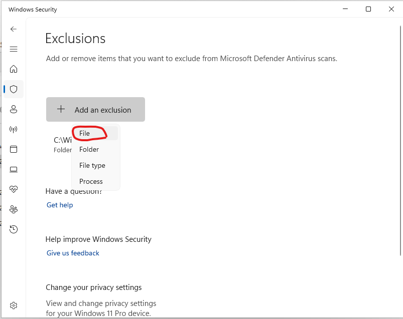

10. Anexo Windows: detección errónea de blunderDB como software malicioso
Nota
Lo siguiente se aplica a los sistemas operativos Windows 10 y 11.
Hoy en día, Windows exige a las empresas editoras de software o a los desarrolladores de software independientes que certifiquen digitalmente sus aplicaciones, o incluso que las distribuyan a través de la Windows Store. Por ello se recomienda recurrir a empresas externas para obtener un certificado digital, a un coste de varios cientos de euros (véase, por ejemplo, https://learn.microsoft.com/en-us/archive/blogs/ie_fr/certificats-de-signature-de-code-ev-extended-validation-et-microsoft-smartscreen ).
Como comparto blunderDB de forma gratuita, no deseo recurrir a estas opciones costosas. Se exploró una vía gratuita reservada al software libre (la SignPath Foundation, https://signpath.org/), pero la candidatura no prosperó; por lo tanto, los binarios de Windows no están firmados digitalmente. En consecuencia, es muy probable que Windows le advierta de un posible peligro, o incluso que bloquee por completo la ejecución de blunderDB. Las siguientes secciones explican los pasos a seguir para superar las reticencias de Windows, y cómo verificar la integridad del binario descargado.
10.1. Advertencia de Windows SmartScreen
Después de descargar blunderDB, al ejecutarlo, es posible que Windows muestre una advertencia como:

Si desea permitir un ejecutable específico bloqueado por SmartScreen:
Intentar ejecutar el ejecutable:
Cuando intente lanzar el ejecutable, SmartScreen puede bloquearlo y mostrar una advertencia.
Hacer clic en «Más información»:
En la ventana de advertencia de SmartScreen, haga clic en Más información.
Seleccionar «Ejecutar de todas formas»:
Si confía en el ejecutable, haga clic en Ejecutar de todas formas para omitir la advertencia de SmartScreen en esta ocasión.
10.2. Bloqueo de Windows Defender
Con ciertas configuraciones de seguridad de Windows, ocurre que, a pesar de haber desbloqueado SmartScreen (véase la sección anterior), Windows Defender puede impedir la ejecución de blunderDB con mensajes como:

o bien:

o incluso ponerlo en cuarentena.
Windows Defender es conocido por generar falsos positivos. Este problema se menciona explícitamente en las preguntas frecuentes del sitio oficial de Golang ( https://go.dev/doc/faq#virus ) o en tickets de GitHub de algunos proyectos programados en Go ( https://github.com/golang/vscode-go/issues/3182 ).
Si desea impedir que la Seguridad de Windows analice blunderDB:
Abrir la Seguridad de Windows:
Vaya a Inicio y escriba Seguridad de Windows.

Ir a «Protección contra virus y amenazas»:
Haga clic en Protección contra virus y amenazas.

Administrar la configuración:
Desplácese hacia abajo y haga clic en Administrar la configuración en Configuración de protección contra virus y amenazas.

Agregar o quitar exclusiones:
Desplácese hasta la sección Exclusiones y haga clic en Agregar o quitar exclusiones.

Agregar una exclusión:
Haga clic en Agregar una exclusión y seleccione Archivo. A continuación, navegue hasta el ejecutable que desea excluir y selecciónelo.



10.3. Verificar la integridad de la descarga (SHA256)
Cada binario publicado en la página de releases va acompañado de un archivo .sha256 que contiene su huella criptográfica. Verificar esta huella permite asegurarse de que el archivo descargado es auténtico y no ha sido alterado, lo que constituye una garantía útil en ausencia de firma de código.
En Windows (PowerShell), en la carpeta de descargas:
Get-FileHash .\blunderDB-windows-<version>.exe -Algorithm SHA256
Compare el valor mostrado con el del archivo blunderDB-windows-<version>.exe.sha256. Ambos deben ser idénticos.
En Linux o macOS:
sha256sum -c blunderDB-linux-<version>.sha256 # Linux
shasum -a 256 -c blunderDB-macos-<version>.zip.sha256 # macOS